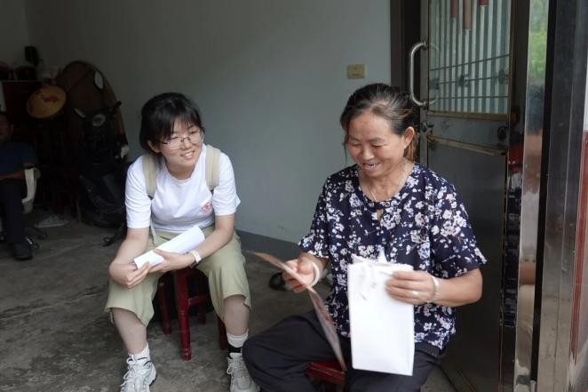

褪去会议室里的正式感，实践的脚步真正踩进了乡村的泥土里。
这里没有讲稿也没有长桌，只有两张小矮凳，实践团成员挨着村民坐下，像邻家晚辈一样拉起了家常，时而递上问卷，时而侧耳倾听。就是在这种最朴素的“唠嗑”中，那些冷冰冰的医疗数据被一点点补全了：村里常住老人的岁数、平时头疼脑热去哪看病、慢性病有没有人管。没有高大上的术语，只有最真实的健康诉求。对这群医学生而言，基层的民生百态不再停留在书本里，而是化作了一页页详实的问卷，更成了他们心中沉甸甸的牵挂。
 山海有回声博医计划 · 实践纪实互动影像库浏览影像
山海有回声博医计划 · 实践纪实互动影像库浏览影像 实践现场 009 / 018
六安 · 入户调研

褪去会议室里的正式感，实践的脚步真正踩进了乡村的泥土里。
这里没有讲稿也没有长桌，只有两张小矮凳，实践团成员挨着村民坐下，像邻家晚辈一样拉起了家常，时而递上问卷，时而侧耳倾听。就是在这种最朴素的“唠嗑”中，那些冷冰冰的医疗数据被一点点补全了：村里常住老人的岁数、平时头疼脑热去哪看病、慢性病有没有人管。没有高大上的术语，只有最真实的健康诉求。对这群医学生而言，基层的民生百态不再停留在书本里，而是化作了一页页详实的问卷，更成了他们心中沉甸甸的牵挂。